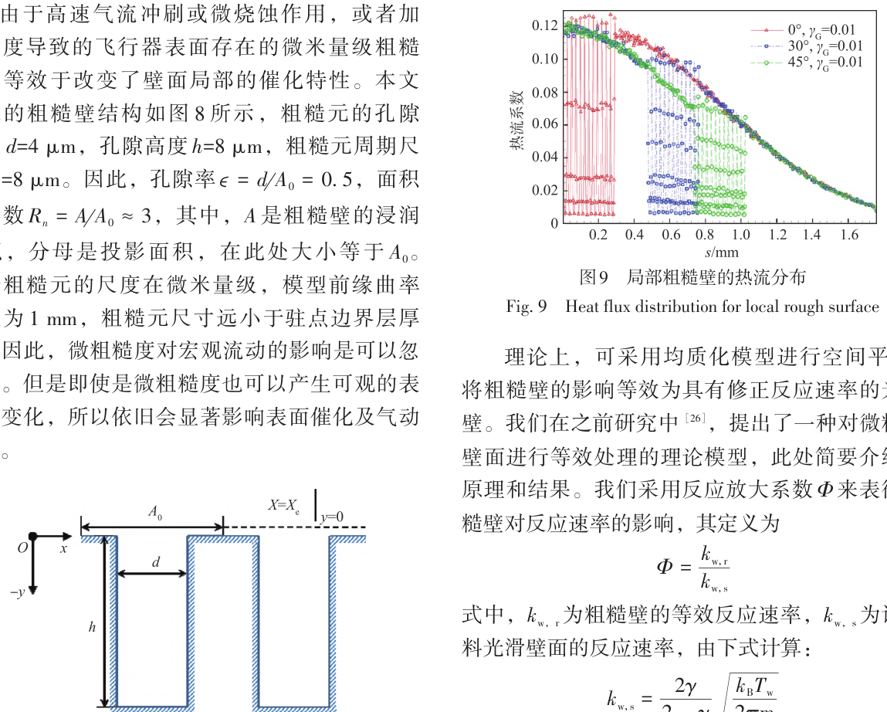
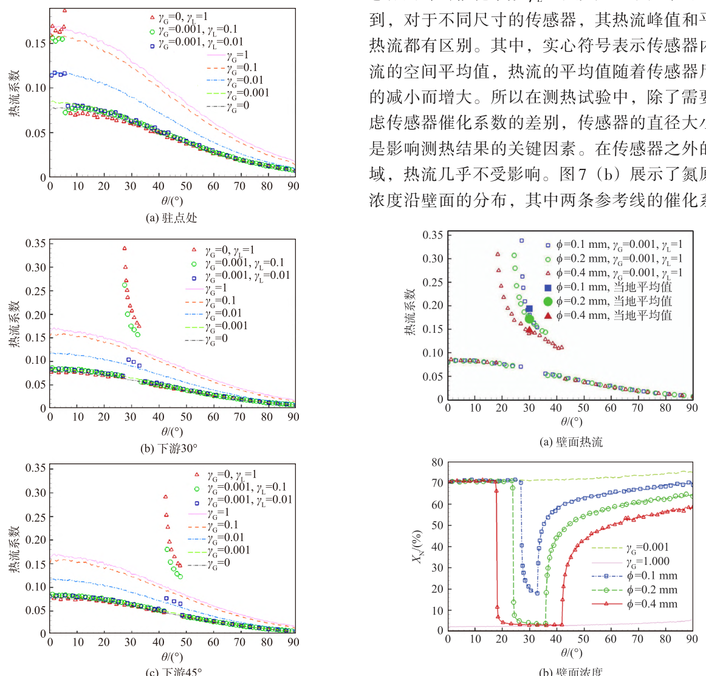
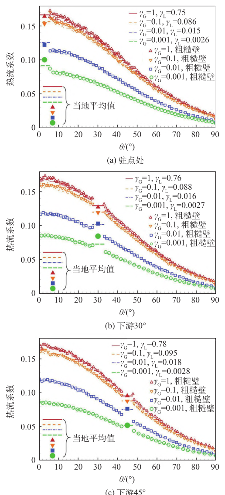

01中文摘要
壁面催化反应是高超声速飞行器气动热环境预测的关键因素之一。工程上常用测热试验确定材料催化系数，但受试验精度和表面粗糙度影响，测得值存在很大散度。本文采用直接模拟 Monte Carlo 方法，研究传感器材料与模型基底材料催化系数不同、以及局部区域存在微观粗糙度时，钝前缘热流分布的变化特征。结果表明，局部催化特性差异会显著影响气动加热，局部热流甚至可能高于完全催化假设下的驻点热流；表面微粗糙度在中等催化系数下影响较大，其效应可用具有等效反应系数的光滑壁代替。
原始摘要（英文/原文）
壁面催化反应是高超声速飞行器气动热环境预测中需考虑的关键因素之一。工程上常用测热试验来确定材料的催化系数，但是受到试验精度和材料表面粗糙度等因素的影响，测得的催化系数往往存在很大散度。采用直接模拟蒙特卡洛方法，研究了传感器材料与模型基底材料催化系数存在差异以及局部区域存在微观粗糙度的情况下，钝前缘热流分布的变化特征。结果表明，局部催化特性差异会显著影响气动加热，局部热流甚至会高于完全催化假设下的驻点热流。表面微粗糙度在中等催化系数下对热流的影响较大，其影响可以用具有等效反应系数的光滑壁代替。研究结果有助于评估测热试验中材料局部特性差异对测试结果的影响，为发展精确的材料属性测试技术和气动加热预测方法提供参考。
02阅读说明
数值模拟（DSMC）研究。bundle 含 9 页完整中文正文、10 幅图件（含 Table 1）；文本层中式（2）—（8）排版错位，已用原 PDF 第 6—7 页（印刷页 26—27）逐式核对；图件为按图注裁剪的位图，可读性中等，图注完整；信息完整度较高。仅依据 bundle 文本/图注与上述两页 PDF，不引入外部知识。 文章类型：期刊
03一句话核心与三句话摘要
用DSMC虚拟测热试验研究局部催化差异与微粗糙度对钝前缘热流的影响，发现局部热流可超过完全催化驻点值。
- 工程测热试验中传感器与基底材料催化系数不同、表面又存在微米级粗糙度，使测得催化系数散度大，局部热流如何变化尚缺系统量化。 AI概括
- 采用 DS2V 对半径 1 mm 二维圆柱、马赫 25 纯氮稀薄绕流做虚拟测热试验，比较驻点/30°/45° 局部催化差异、传感器尺寸与局部矩形粗糙壁的影响，并用均质化模型把粗糙壁等效为光滑壁。 AI概括
- 局部催化差异可显著改变热流，下游局部热流甚至高于完全催化驻点热流；粗糙度影响在中等催化系数下最大，可用等效催化系数的光滑壁代替。 原文明确
04核心内容清单
| 要点 | 类型 | 重要性 | 原文依据 | 属性 |
|---|---|---|---|---|
| 以 DSMC/DS2V 模拟半径 1 mm 二维圆柱、Mach 25 纯氮稀薄绕流，并用 Fay-Riddell 化学平衡驻点热流对照，验证程序对非平衡流动与壁面催化的可靠性。 | 方法 | A | p.23-24，图3 | 原文明确 |
| 基准规律：完全催化壁热流约为完全不催化壁的 2 倍，热流在 γ=0.001~0.1 区间随催化系数变化最快。 | 定量结果 | A | p.24，图3 | 原文明确 |
| 驻点局部高催化（γL=1、γG=0）只把当地热流抬到近似该催化系数对应的值，下游仅在交界附近略有下降。 | 现象 | A | p.24，图6(a) | 原文明确 |
| 下游 30°/45° 局部高催化时，局部热流高于当前催化系数对应的热流，甚至高于完全催化条件下的驻点热流，且局部区域内上游侧远高于下游侧。 | 核心发现 | A | p.25，图6(b)(c) | 原文明确 |
| 上述下游增强由浓度对流与逆流向原子扩散造成：上游低催化区未复合的原子流到下游高催化区复合放热。 | 机理 | A | p.25 | AI概括 |
| 传感器直径 0.1/0.2/0.4 mm 对比表明，传感器内热流空间平均值随直径减小而增大，传感器外热流几乎不受影响。 | 参数规律 | A | p.25，图7 | 原文明确 |
| 局部区域不影响上游流动，但显著影响当地与下游流动传热；因下游基底催化系数低，热流对浓度变化不敏感，故下游热流影响仅在交界附近可见。 | 机理/边界 | B | p.26 | 原文明确 |
| 矩形粗糙壁几何为孔宽 d=4 μm、孔高 h=8 μm、周期 A0=8 μm，孔隙率 ε=0.5、面积比 Rn≈3；粗糙元远小于驻点边界层厚度与曲率半径，宏观流动可忽略其影响。 | 几何/条件 | A | p.26，图8 | 原文明确 |
| 均质化模型给出 Φ=1+ε(φ−1)：Th 很小时反应放大系数趋近面积比 Rn，Th 很大时小于 1，粗糙度反而抑制反应。 | 理论结果 | A | p.27，式(5)(7)(8) | 原文明确 |
| 局部粗糙壁与等效光滑壁热流对比：低催化系数下粗糙度增热流，高催化系数下略降，中等 γ=0.001~0.01 时影响最显著，三个位置均可用等效催化系数光滑壁替代。 | 核心发现/验证 | A | p.27-28，图10、表1 | 原文明确 |
| 工程建议：测热试验中传感器表面材料的催化系数和粗糙度应与模型材料保持一致，以减小测量误差。 | 工程结论 | A | p.28，结论 | 原文明确 |
05引言：研究问题与领域缺口
高超声速飞行使气体发生振动激发、离解-复合与电离，并与热防护材料发生表面催化、烧蚀等气-固作用；催化复合释放的化学能可使催化加热高于常规对流加热，不同材料热流可差数倍（p.22）。催化系数 γ 定义为碰壁原子中发生催化反应的比例，介于 0~1，取决于气体/材料种类、温度与材料历史。工程测热试验常用同轴热电偶，敏感元件（铂、铜、镍、不锈钢等）催化系数高而周围隔热材料低，传感器与附近材料催化性质差异大；高温冲刷与微烧蚀还会造成表面催化不均匀（p.22）。丁明松等已发现局部催化差异导致热流跳变，指出把完全催化壁热流当作上限不准确。另一方面，微米/亚微米粗糙结构会改变表面反应，CFD 难以模拟多尺度流动，Bottaro 与作者前期工作表明微粗糙壁可当作等效光滑壁、即改变等效催化系数（p.23）。本文目标：评估飞行器局部催化特性差异对气动加热的影响，为测热试验推算材料催化系数提供参考；同时对比局部粗糙壁与等效光滑壁的热流，验证复杂流动环境中均质化方法的适用性（p.23）。
06流动条件与几何构型
| 项目 | 数值/描述 | 依据 | 备注 |
|---|---|---|---|
| 研究对象/几何 | 二维圆柱驻点流，圆柱半径 1 mm；二维（对称面取一半展示） | p.23；图4（p.24） | |
| 来流气体 | 纯氮气（N2，含离解-复合） | p.23 | |
| 来流马赫数 | M∞ = 25 | p.23 | |
| 来流密度 | ρ∞ = 4×10^-3 kg/m³ | p.23 | |
| 来流温度 | T∞ = 300 K | p.23 | |
| 壁面温度 | Tw = 300 K（等温壁） | p.23 | |
| 壁面反射模型 | 热完全适应的完全漫反射 | p.23 | |
| 全局催化系数系列（基准算例） | γ = 0、0.001、0.01、0.1、1（0 为完全非催化，1 为完全催化） | p.23-24，图3 | |
| 局部催化区域位置与尺寸 | 驻点、下游 30°、下游 45°；直径 0.1 mm（因对称性只模拟一半） | p.24，图4 | |
| 局部/基底催化组合（浓度云图算例） | 左半：γG=0、γL=1；右半：γG=0.001、γL=0.01 | p.24，图5 | |
| 局部/基底催化组合（热流算例） | γL=1，γG=0 与 γG=0.001；下游 30°/45° 局部 γL 提高、基底 γG 较低 | p.24-25，图6 | |
| 传感器直径（30° 位置） | 0.1 mm、0.2 mm、0.4 mm；γG=0.001，γL=1 | p.25，图7 | |
| 粗糙元几何 | 孔宽 d=4 μm，孔高 h=8 μm，周期 A0=8 μm；孔隙率 ε=d/A0=0.5；面积比 Rn=A/A0≈3；长宽比 δ=h/d=2 | p.26，图8 | |
| 粗糙壁算例设置 | 全局催化系数 0.01；局部粗糙壁位于驻点、30°、45°，宽度 0.1 mm | p.26，图9 | |
| 压力条件（均质化模型输入） | 驻点约 300 kPa；30° 为驻点压力的 75%，45° 为 50%（修正牛顿正弦平方律估算） | p.27 | |
| 内禀催化系数（等效系数表） | γ = 1、0.1、0.01、0.001，分别对应驻点、30°、45° | p.27，表1 | |
| 热流系数定义 | Ch = q/(1/2 ρ∞u∞³)，q 为热流率 | p.23 |
07核心现象与关键参数
| 参数 | 定义 | 数值 | 关系/说明 | 依据 |
|---|---|---|---|---|
| 催化系数 γ | 碰壁原子中发生催化反应的比例，0≤γ≤1 | 0、0.001、0.01、0.1、1 | γ = N_react/N_tot，式(1) | p.22，式(1)；p.23-24 |
| 热流系数 Ch | 以 1/2 ρ∞u∞³ 无量纲化的壁面热流 | 全文以 Ch 纵坐标给出（数值读图） | Ch = q/(1/2 ρ∞u∞³) | p.23 |
| 完全催化/非催化热流比 | γ=1 与 γ=0 的壁面热流之比 | 约 2（完全催化约为完全不催化的 2 倍） | 热流随 γ 单调增大 | p.24，图3 |
| 热流快速变化区间 | 热流对催化系数最敏感的 γ 范围 | γ=0.001~0.1 | 该区间 Ch 随 γ 变化较快 | p.24 |
| 局部催化区域直径 | 模拟热电偶敏感元件的圆形区域尺寸 | 0.1 mm（对比 0.2、0.4 mm） | 平均热流随直径减小而增大 | p.24-25 |
| 反应放大系数 Φ | 粗糙壁等效反应速率与光滑壁反应速率之比 | 由式(8)计算；Th→0 时趋近 Rn≈3，Th 大时小于 1 | Φ = k_w,r/k_w,s = 1+ε(φ−1) | p.26-27，式(2)(8) |
| 光滑壁反应速率 k_w,s | 由内禀催化系数与分子热运动通量决定的壁面反应速率 | 按式(3)计算（未给数值） | k_w,s = [2γ/(2−γ)]√(k_B T_w/2πm) | p.26，式(3) |
| Thiele 数 Th | 粗糙元内部反应速率与扩散速率之比，表征化学非平衡程度 | 按式(5)由 k_w,s、d、D 计算（未列具体数值） | Th = √(2k_w,s d/D) | p.27，式(5) |
| 孔隙率 ε 与面积比 Rn | ε=d/A0；Rn=A/A0，A 为浸润面积、A0 为投影面积 | ε=0.5，Rn≈3 | Th 很小时 Φ→Rn | p.26-27 |
| 等效催化系数 | 使光滑壁热流与局部粗糙壁相当的内禀催化系数 | 驻点：0.75/0.086/0.015/0.0026；30°：0.76/0.088/0.016/0.0027；45°：0.78/0.095/0.018/0.0028（对应 γ=1/0.1/0.01/0.001） | 由 Φ 反推，见表1 | p.27，表1 |
| 驻点压力 | 修正牛顿正弦平方律估算的驻点压力 | 约 300 kPa；30° 为 75%，45° 为 50% | 用于估算扩散系数 D（D 反比于压强） | p.27 |
08方法与数据
采用直接模拟蒙特卡洛（DSMC）方法及 Bird 开源程序 DS2V，对二维圆柱驻点流（半径 1 mm）做一系列虚拟测热试验；气体为纯氮，来流 Mach 25、密度 4×10^-3 kg/m³、温度 300 K，壁温 300 K（p.23）。程序用量子振动能级模型处理离解-复合，时间步长约平均碰撞时间的 1/3，网格自动生成并局部适应，每网格不少于 8 个模拟粒子、网格尺寸小于分子平均自由程的 1/3；典型算例网格约 1.76×10^6、模拟粒子约 4.4×10^7；碰撞用变径硬球模型，粘性-温度指数与参考直径取 Bird 默认值，固体边界为热完全适应的完全漫反射（p.23）。热流以 Ch=q/(1/2 ρ∞u∞³) 表示（p.23）。先在 γ=0、0.001、0.01、0.1、1 下计算基准热流，并用 Fay-Riddell 化学平衡驻点热流对照验证（p.24）。随后在驻点、下游 30°、45° 设置直径 0.1 mm 的可变催化区域模拟热电偶，改变局部/基底催化系数组合；在 30° 处比较 0.1、0.2、0.4 mm 三种传感器直径（p.24-25）。粗糙度部分把传感器区域替换为 d=4 μm、h=8 μm、周期 A0=8 μm 的矩形粗糙壁，孔隙率 ε=0.5、面积比 Rn≈3，对粗糙元表面热流取空间平均（p.26）。理论侧采用作者前期的均质化模型，由式（2）—（8）求反应放大系数并反推等效催化系数（p.26-27）。
| 项目 | 内容 | 依据 | 备注 |
|---|---|---|---|
| 数值方法 | 直接模拟蒙特卡洛（DSMC），开源程序 DS2V（Bird 开发） | p.23 | |
| 化学反应模型 | 量子振动能级模型处理气体离解-复合反应 | p.23 | |
| 时间步长 | 约为平均碰撞时间的 1/3 | p.23 | |
| 网格与粒子 | 网格自动生成并局部适应，每网格≥8 个模拟粒子，网格尺寸<分子平均自由程的 1/3；典型算例网格约 1.76×10^6，模拟粒子约 4.4×10^7 | p.23 | 文中称已验算满足 DSMC 要求，未给网格无关性曲线 |
| 分子碰撞模型 | 变径硬球（VHS）模型；粘性-温度指数、分子参考直径取 Bird 程序默认设置 | p.23 | |
| 壁面边界 | 热完全适应的完全漫反射；催化系数通过壁面反应概率实现 | p.23 | |
| 验证 | 将 γ=1 驻点热流与 Fay-Riddell 化学平衡驻点热流对比，二者相当，且与 Wang 的结果相符 | p.24，图3 | |
| 虚拟测热试验 | 在驻点/30°/45° 设可变催化系数圆形区域模拟热电偶；对 0.1/0.2/0.4 mm 三种直径取传感器内热流空间平均 | p.24-25 | |
| 粗糙壁处理 | 将传感器区域替换为矩形微粗糙结构；对粗糙元表面热流取空间平均，并与等效催化系数光滑壁的 DSMC 结果对比 | p.26-28 | |
| 均质化理论 | 一维反应-扩散方程 + Thiele 数 + 界面通量守恒，得反应放大系数 Φ 并反推等效催化系数；扩散系数取自文献[27-28]，压力用修正牛顿正弦平方律估算 | p.26-27，式(2)—(8) |
09核心推导与公式
把微米级矩形粗糙孔洞内的异相催化与扩散过程做一维化与横向平均，用 Thiele 数刻画反应/扩散竞争，先求孔内浓度分布，再由孔口通量守恒得到单个孔隙的反应放大系数，最后按孔隙率加权得到整面粗糙壁的等效反应速率，并反推出等效催化系数。
关键假设
- 粗糙元为二维矩形孔洞，孔宽 d、孔高 h、周期 A0，孔隙率 ε=d/A0，长宽比 δ=h/d
- 孔内浓度只沿深度方向变化，对二维孔隙取一维近似，侧壁反应折算为控制方程中的等效反应项
- 壁面异相催化速率由内禀催化系数 γ 与分子热运动通量描述，k_w,s=[2γ/(2−γ)]√(k_B T_w/2πm)
- 混合气体用二元扩散系数 D 描述，D 反比于压强；压力由修正牛顿正弦平方律估算
- 粗糙元尺度远小于模型前缘曲率半径（1 mm）与驻点边界层厚度，微粗糙度对宏观流动的影响可忽略
- 孔口界面满足质量守恒（催化消耗通量=扩散通量），粗糙壁按孔隙与平台面积加权平均
推导过程
用粗糙壁等效反应速率 k_w,r 与同材料光滑壁反应速率 k_w,s 之比定义 Φ，把几何形貌的影响全部归入该系数。
稀薄气体壁面催化速率由内禀催化系数 γ、壁温 T_w、Boltzmann 常数 k_B 和分子质量 m 决定；γ 本身定义为发生催化反应的碰壁原子通量份额。
对二维粗糙孔隙取一维近似，把侧壁面上的反应转换到控制方程中，在横向平均意义下得到浓度沿深度的纵向分布方程：左端为扩散项，右端为侧壁等效反应项。
孔口（ξ=0）处无量纲浓度取 1；孔底（ξ=1）处给出由侧壁反应决定的浓度梯度条件。以孔外缘浓度 X_e 无量纲化浓度、以孔深 h 无量纲化坐标。
Th 为粗糙元内部反应速率与扩散速率之比，表征化学非平衡程度；D 为混合气体二元扩散系数。
二阶常系数方程的通解取 cosh/sinh 组合，代入孔底梯度条件后得到含参数 S_rect 的浓度分布；S_rect 汇集了 Th、δ 的影响。
根据界面处质量守恒，催化消耗通量 N_react 等于流入通量 N_in，即 Φk_w,s=D dX̃/dy|_(y=0)；由孔口浓度梯度得到矩形孔隙的反应放大系数 φ。
把粗糙壁看作孔隙与平台两部分，以孔隙率 ε 对孔隙放大系数与平台（φ=1）加权平均。
由式(8)得 Φ 后，按 k_w,r=Φk_w,s 及式(3)反推出等效催化系数；对 γ=1、0.1、0.01、0.001 的粗糙壁在驻点、30°、45° 列表（表1），再用等效催化系数光滑壁的 DSMC 热流与局部粗糙壁热流对比验证。
适用边界：推导基于孔内一维、矩形规则孔洞与横向平均，未含三维随机粗糙形貌；D 由文献关联式计算并假设反比于压强，压力用修正牛顿正弦平方律估算；仅处理异相催化，气相复合只在解释 γ=0.001 驻点偏差时定性提及；未考虑 γ 的温度依赖性；等效系数的适用性仅在同一 DSMC 工况、三个位置和四个 γ 下验证。
10结果：主要发现与关键证据
基准结果：壁面热流随催化系数减小而减小，完全催化热流约为完全不催化的 2 倍，且在 γ=0.001~0.1 之间随催化系数变化较快；Fay-Riddell 化学平衡驻点热流与完全催化结果相当，说明程序可靠（p.24，图3）。局部催化：驻点局部高催化只使当地热流升高到近似该 γ 对应的值，下游仅在交界附近略降（p.24，图6a）；下游 30°/45° 局部高催化时，局部热流高于当前 γ 对应的热流，甚至高于完全催化驻点热流，且局部区域内上游侧热流远高于下游侧（p.25，图6b、6c）。γG=0、γL=1 的驻点算例在催化系数间断界面附近出现热流跳跃点，归因于逆流向原子扩散（p.25）。传感器尺寸：0.1/0.2/0.4 mm 三种直径下热流峰值与平均值不同，平均值随直径减小而增大，传感器之外热流几乎不受影响；传感器越小，局部浓度越高（p.25-26，图7）。粗糙壁：γ 全局取 0.01、粗糙区宽 0.1 mm 时，远离粗糙区三者热流符合较好，粗糙壁面上热流大幅跳跃，粗糙结构使下游曲线平移约 0.2 mm（p.26，图9）。低催化系数下粗糙度增大热流，高催化系数下热流略降，中等 γ=0.001~0.01 时影响最显著（p.27，图10）。
| 发现 | 证据 | 证据类型 | 强度 | 位置 | 属性 |
|---|---|---|---|---|---|
| 完全催化壁热流约为完全不催化壁的 2 倍，且 γ=0.001~0.1 是热流对催化系数最敏感的区间。 | 图3 给出 γ=0、0.001、0.01、0.1、1 的壁面 Ch 分布；Fay-Riddell 化学平衡驻点热流与完全催化结果相当。 | 定量结果 | 强 | p.24，图3 | 原文明确 |
| 驻点局部高催化只把当地热流提升到近似该催化系数对应的值，对下游热流影响很小，仅在交界附近略降。 | 图6(a) γG=0、γL=1 的壁面热流分布；界面附近存在热流跳跃点，作者归因于逆流向原子扩散。 | 现象 | 强 | p.24-25，图6(a) | 原文明确 |
| 下游 30°/45° 局部高催化可使局部热流高于完全催化驻点热流，且局部区域内上游侧热流远高于下游侧。 | 图6(b)(c) 中局部热流峰值超出 γ=1 对应的当地热流；作者用上游未复合原子对流进入高催化区解释。 | 核心发现 | 强 | p.25，图6(b)(c) | 原文明确 |
| 传感器直径越小，传感器内平均热流越高；传感器之外区域热流几乎不受影响。 | 30° 位置 0.1/0.2/0.4 mm 三种直径的实心符号（空间平均）随直径减小而升高；图7(b) 显示小传感器区局部浓度更高。 | 参数规律 | 强 | p.25-26，图7 | 原文明确 |
| 催化系数间断界面附近出现热流跳跃点，由逆流向原子扩散造成；该现象在驻点附近因对流速度小而最明显。 | 图6(a) γG=0、γL=1 算例；文中说明下游低催化区原子浓度高、扩散至上游高催化区复合。 | 机理 | 中 | p.25 | 原文明确 |
| 反应放大系数由 Thiele 数控制：Th 很小时趋近面积比 Rn，Th 很大时小于 1，粗糙结构反而减慢表面反应。 | 式(5)(7)(8) 的渐近分析；文中明确给出两种极限的解释（扩散限制）。 | 理论结果 | 强 | p.27，式(5)(7)(8) | 原文明确 |
| 局部粗糙壁在低催化系数下增热流、高催化系数下略降热流，中等 γ=0.001~0.01 时影响最显著；三个位置均可用等效催化系数光滑壁替代。 | 图10 离散符号（粗糙壁）与线条（等效光滑壁）对比；表1 给出等效系数。 | 核心发现/验证 | 强 | p.27-28，图10、表1 | 原文明确 |
| γ=0.001 时驻点粗糙壁热流略高于等效光滑壁，作者推测与异相催化较慢时气相复合增强的竞争有关。 | 图10(a)(b) 在 γ=0.001 的偏差；文中用“一个可能的原因”表述，未给定量证明。 | 推测 | 弱 | p.27 | 原文明确 |
11机制解释与论证链
局部催化差异改变的是近壁原子浓度边界层与界面通量平衡。高催化区迅速消耗原子，使当地浓度降低、热流升至该催化系数对应的水平；界面两侧形成浓度梯度，驱动原子逆流向（向上游）扩散。在下游位置，上游低催化区保留大量未复合原子，这些原子被对流带入高催化区并在那里复合放热，因此局部区域上游侧热流高于下游侧，峰值可超过完全催化驻点热流；驻点处对流速度很小，故驻点局部差异对下游影响有限。传感器尺寸效应是空间平均效应：高催化区占比随直径减小而增大，平均热流升高。粗糙度则通过增加浸润面积与孔内扩散阻力改变有效反应速率：Th 小（反应慢、扩散快）时放大系数趋近面积比 Rn，粗糙度增强催化；Th 大（反应快、扩散受限）时放大系数小于 1，粗糙度反而抑制反应；中等 γ 时二者竞争最剧烈，故粗糙度影响最显著。
12讨论：结论、贡献与局限
作者把局部催化差异的效应归结为浓度场再分配：局部高催化区迅速消耗原子，界面两侧浓度梯度驱动逆流向扩散；在下游，上游低催化区未复合的原子被对流带入高催化区，使该区上游侧热流显著高于下游侧，并可超过完全催化驻点热流（p.25）。由于本文下游基底 γ 很小，热流对浓度变化不敏感，因此局部高催化对下游热流的影响只表现在交界附近（p.26）。传感器尺寸效应来自空间平均：直径越小，高催化区在平均值中占比越大，平均热流越高，说明测热结果不仅取决于催化系数还取决于传感器尺寸（p.25）。粗糙壁方面，Thiele 数 Th 决定反应与扩散的竞争：Th 很小时反应放大系数趋近面积比 Rn，粗糙度放大反应；Th 很大时扩散受限，放大系数小于 1，粗糙度反而降低反应速率（p.27）。作者据此认为局部粗糙壁可用等效催化系数的光滑壁替代，并给出三个位置、四种内禀催化系数的等效值（表1，p.27）。对 γ=0.001 驻点粗糙壁热流略高于等效光滑壁，作者给出一个可能原因：异相催化较慢时气相复合原子增多，二者存在竞争（p.27），属定性解释。
作者结论
作者结论（p.28）：(1) 改变壁面局部催化特性会使热流显著变化，驻点下游区域尤其明显；催化系数差异大时，由于浓度对流效应，局部热流甚至会高于完全催化的驻点热流。(2) 热流测量结果受传感器大小影响，传感器尺寸越小热流跳变越显著。(3) 表面粗糙度的影响不仅取决于几何形貌，还依赖当地气体扩散系数与催化反应系数；中等催化系数下影响较大；反应速率远小于扩散速率时放大系数近似等于面积比，反之粗糙度等效于降低催化速率。(4) 测热试验中传感器表面材料的催化系数和粗糙度应与模型材料保持一致，以减小测量误差。
主要贡献
- 系统量化了传感器/基底催化系数差异在驻点、30°、45° 三个位置对钝前缘热流分布的影响，给出局部热流可超过完全催化驻点热流的算例。
- 揭示了局部高催化区上游侧热流高于下游侧的浓度对流/逆流扩散机理，并区分了驻点与下游两种不同响应。
- 量化了传感器直径（0.1/0.2/0.4 mm）对测得平均热流的影响，指出传感器尺寸是测热试验的关键误差源。
- 把作者前期的均质化反应-扩散模型用于局部粗糙壁，与 DSMC 热流直接对比，验证了“等效催化系数光滑壁”替代方案。
- 给出驻点、30°、45° 在四种内禀催化系数下的等效催化系数表（表1），可直接用于测热数据解读。
局限与未解决问题
作者承认/材料显示：计算为二维圆柱简化，非真实三维钝前缘；DSMC 计算规模与时间尺度受限；模型参数会影响热流绝对值，作者仅论证相对变化可信；γ=0.001 驻点粗糙壁偏差只给出“一个可能的原因”，未定量证明；均质化模型为一维矩形孔近似。AI 识别的局限：无实验对照；网格与粒子数的收敛性仅定性声明，未给无关性结果；只考虑纯氮单组分与固定壁温，未考虑 γ 的温度依赖性；传感器热流空间平均的权重方式（面积/弧长）未明确；局部催化区按二维条带/半圆处理，与真实圆形传感器的差异未讨论；等效系数表仅覆盖三个位置、四种 γ 与单一压力条件，外推性未验证。
13对高速流动与工程的意义
对高速流动工程的意义：(1) 测热试验设计——传感器材料催化系数与粗糙度必须与模型一致，传感器尺寸会系统偏置测量结果，应在数据归一中考虑（p.28，原文明确）。(2) 气动热预测——完全催化驻点热流不是局部热流的绝对上限，把完全催化壁热流当作保守上限的工程做法在存在局部催化不均匀时会低估峰值（p.25，原文明确）。(3) 建模方法——微粗糙壁可用等效催化系数光滑壁替代，为含微尺度粗糙度的气动热工程计算提供了可操作的均质化途径（p.27-28）。不能回答：三维真实粗糙形貌与随机分布、γ 随温度变化、其他气体/更高焓条件、实验条件下的定量验证。对进气道、隔离器等内流的启示需另行验证（AI 推断，文中未讨论）。
14核心图件




15可引用原文素材
| 原文短句 | 可支持的观点 | 位置 | 使用建议 |
|---|---|---|---|
| “局部热流甚至会高于完全催化假设下的驻点热流” | 局部催化不均匀可使热流超过传统认为的上限 | 摘要，p.21 | 论证完全催化驻点热流并非绝对上限时直接引用 |
| “完全催化的热流约为完全不催化的2倍” | 催化系数对热流的量级影响 | p.24，图3讨论 | 给出催化加热量级的基准数据 |
| “上游部分的热流远高于下游” | 局部高催化区内部热流分布不对称，源于上游原子对流 | p.25 | 说明浓度对流方向性对局部热流分布的作用 |
| “热流的平均值随着传感器尺寸的减小而增大” | 传感器尺寸是测热结果的系统偏置因素 | p.25，图7讨论 | 讨论测热试验误差来源时引用 |
| “反应放大系数等于面积比参数Rn” | Th 很小时粗糙度的反应放大上限 | p.27 | 解释粗糙壁等效反应速率的渐近行为 |
| “粗糙结构不但不会加快表面反应速率，反而会减慢反应速率” | Th 很大时扩散限制导致粗糙度抑制反应 | p.27 | 纠正“粗糙度必然增强催化”的直觉 |
| “传感器尺寸越小，热流跳变越显著” | 小尺寸传感器对局部催化差异更敏感 | p.28，结论 | 测热试验传感器选型与数据对比时引用 |
16最终核验
| 核验项 | 结论 |
|---|---|
| 仅基于全文 | 是。全部内容来自 build/deep_input/382.md 的正文、图注与图件清单；式(2)—(8)另用原 PDF 第6—7页（印刷页26—27）核对，未使用外部知识。 |
| A 级要点有依据 | 是。11 条 core_points 中 A 级 9 条，均对应正文页码、图3/6/7/8/9/10 或表1、式(2)—(8)；两处 AI 概括（机理、对流方向性）已在 attr 中标注。 |
| 属性标注 | 是。three_sentence、core_points、findings 均逐条标注【原文明确】/【AI概括】/【AI推断】；推测性解释（γ=0.001 偏差）标为弱证据。 |
| 覆盖范围 | 完整。bundle 376 行、9 页正文一次读完；图件清单 11 项全部记录，选用 4 幅核心图；未读参考文献列表以外的外部材料。 |
| 无编造 | 是。页码用印刷页 p.21—p.28；图号/页码严格取自图件清单（图10 的文件名为 fig11_p8.png，已按清单保留）；未给出原文没有的数值；等效系数逐项抄自表1。 |
需回原文确认
- 二维矩形粗糙模型对真实三维随机粗糙形貌的代表性如何？文中未讨论。
- 网格数 1.76×10^6、粒子数 4.4×10^7 仅声明满足 DSMC 要求，未给出网格/粒子数无关性结果。
- γ=0.001 时驻点粗糙壁热流高于等效光滑壁，文中仅给出“气相复合竞争”的可能原因，缺定量证据。
- 表1 等效催化系数仅覆盖三个位置、四种 γ 与单一压力条件，能否外推到其他压力、温度与气体？
- 催化系数随温度变化未考虑，高温壁条件下等效关系是否仍成立？
- 无实验数据对照，DSMC 预测的绝对热流水平未验证（作者仅论证相对变化）。
- 传感器内热流“空间平均”的权重（面积或弧长）文中未明确。
- 局部催化区按对称半圆/二维条带处理，与真实圆形敏感元件的差异未评估。
17关联文献
依据标签、板块、构型与作者脉络自动关联，可据此追踪同一问题的前序与后续工作。
18引用格式
选择期刊风格后复制；出处保留原刊名。BibTeX 可直接用于 LaTeX。
引用格式
章顺良, 鲍麟 & 王智慧 2023 壁面局部催化特性和微粗糙度对气动加热的影响. 空天技术 (3), 21–29. https://doi.org/10.16338/j.issn.2097-0714.20230050
PDF上传 PDF 并更新本页
本页缺少全文、摘要或图件时，可在浏览器本地补入 PDF。解析完全在本机完成，不上传网络；完成后会更新本页的 PDF 打开链接、原摘要、IMRaD 机器抽取、关键句与含图页面。复杂的公式语义与中文深度解读仍以原文和既有精读记录为准。